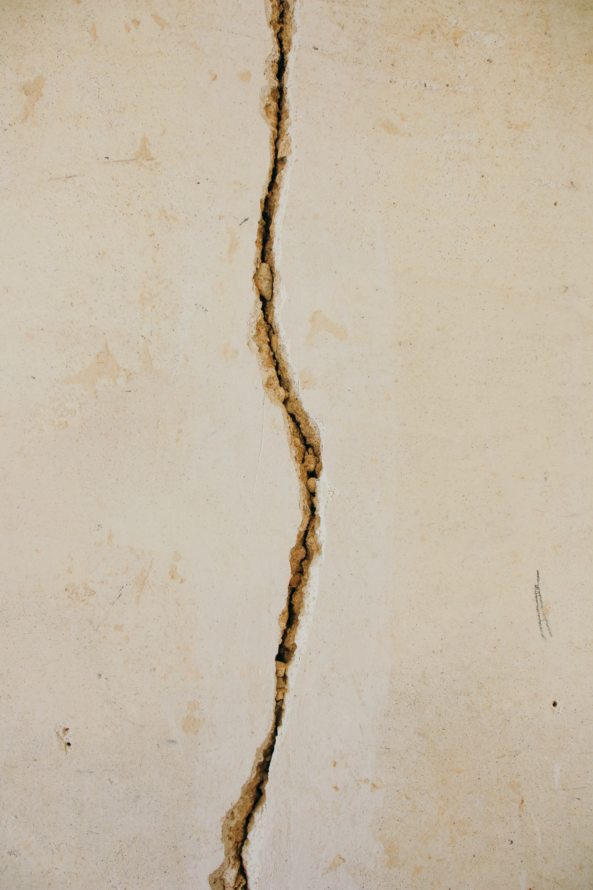

굽이져 흰 띠 두른 능선 길 따라
달빛에 걸어가던 계곡의 여운을
내 어이 잊으리오,
꿈 같은 산행을
잘 있거라 설악아 내 다시 오리리리리~~~~~!
별 하나에 추억(追憶)과/ 별 하나에 사랑과/ 별 하나에 쓸쓸함과/ 별 하나에 동경(憧憬)과/ 별 하나에 시(詩)와/ 별 하나에 어머니, 어머니 어머님, 나는 별 하나에 아름다운 말 한마디씩 불러봅니다/ 소학교(小學校) 때 책상(冊床)을 같이 했든 아이들의 이름과, 패(佩), 경(鏡), 옥(玉) 이런 이국(異國) 소녀(少女)들의 이름과, 벌써 아기 어머니 된 계집애들의 이름과 가난한 이웃 사람들의 이름과, 비둘기, 강아지, 토끼, 노새, 노루, “프랑시스 · 잠” “라이너 · 마리아 · 릴케” 이런 시인(詩人)들의 이름을 불러봅니다. 이네들은 너무나 멀리 있읍니다./ 별이 아슬이 멀듯이, 어머님,/ 그리고 당신은 멀리 북간도(北間島)에 게십니다. 나는 무엇인지 그리워/ 이 많은 별빛이 나린 언덕 우에/ 내 이름자를 써 보고,/ 흙으로 덮어 버리었읍니다. 딴은 밤을 새워 우는 벌레는/ 부끄h1러운 이름을 슬퍼하는 까닭입니다. 그러나 겨울이 지나고 나의 별에도 봄이 오면/ 무덤우에 파란 잔디가 피어나듯이/ 내 이름자 묻힌 언덕우에도/ 자랑처럼 풀이 무성할게외다.
